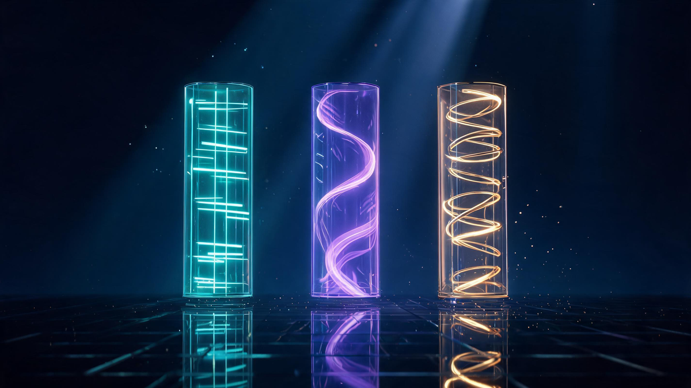
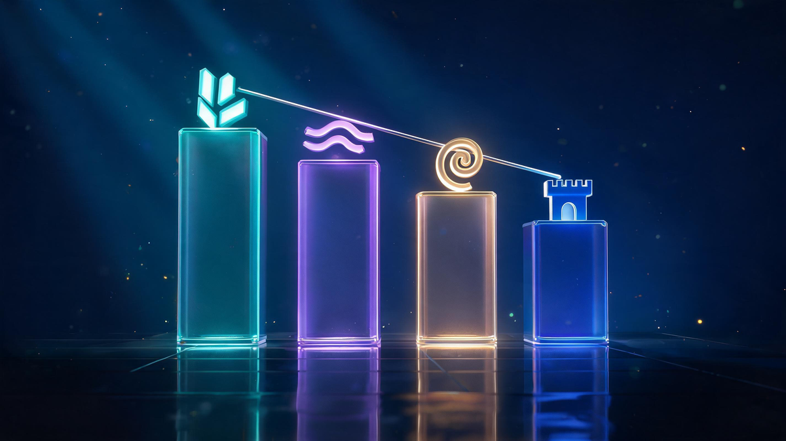
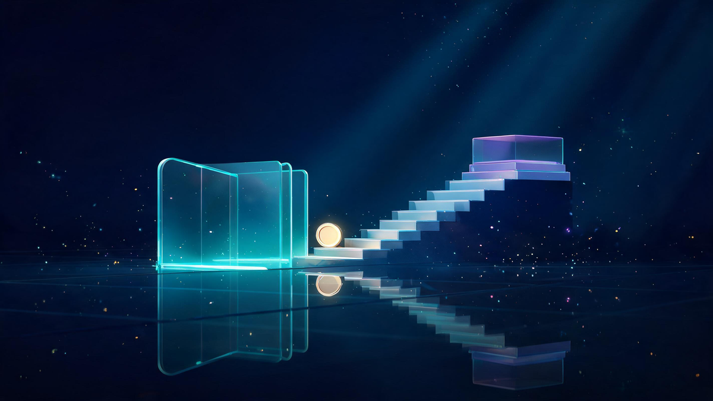
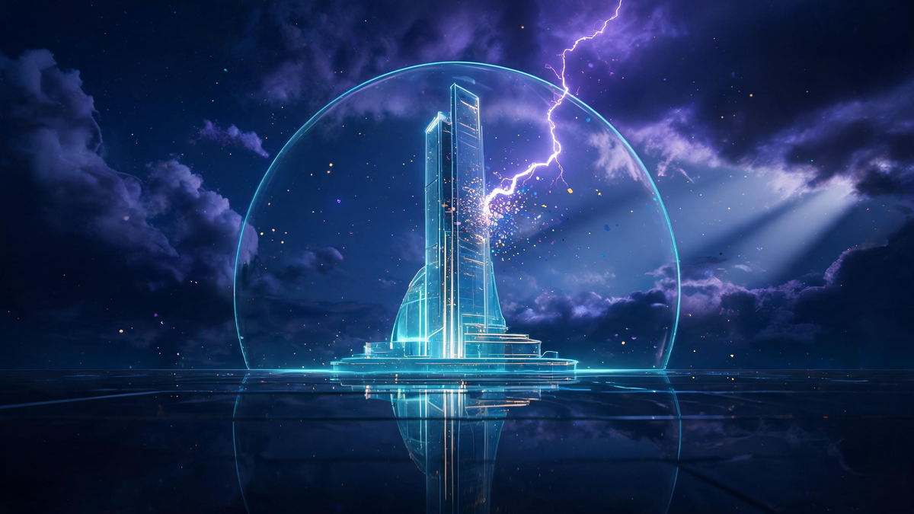

Best Quantum Computing Stocks in 2026: Pure-Plays & Giants
Quick answer
The best quantum computing stocks in 2026 split into two camps: pure-plays — IonQ (trapped-ion, DARPA Stage 3), D-Wave (annealing), Rigetti (superconducting) — for maximum exposure with maximum volatility, and big-tech giants — IBM, Alphabet, Microsoft — where quantum rides inside stable businesses. The 2026 scoreboard favors the diversified route: the QTUM ETF gained ~40% YTD while star pure-play IonQ fell 8%.
In this guide
- The 2026 Quantum Stock Landscape
- The Pure-Plays: IonQ, D-Wave, Rigetti
- The Giants: IBM, Alphabet, Microsoft, Amazon
- Side-by-Side Comparison
- Quantum Stocks Under $10: The Affordable Tier
- The Buffett Question
- Risks: Cash Burn, Rates and Hype
- The Easier Route: Quantum ETFs
- Verdict: How to Actually Position
- FAQ
Key Takeaways
- Two ways to own quantum: pure-plays (IonQ, D-Wave, Rigetti) for maximum exposure, giants (IBM, Alphabet, Microsoft) for stability.
- IonQ advanced to DARPA Quantum Benchmarking Stage 3 alongside IBM — a credible technical milestone.
- 2026's lesson: QTUM ETF +40% YTD vs IonQ −8% — diversification beat stock-picking.
- No Buffett quantum holdings exist in disclosed filings — value investing skips pre-profit speculation.
- Rate headlines move the entire sector in a day (Oct 9: IonQ −4% on rate-hike odds).
The best quantum computing stocks in 2026 come in two flavors: pure-plays like IonQ, D-Wave and Rigetti that swing violently with every milestone, and giants like IBM, Alphabet and Microsoft where quantum is one program inside a stable empire. This guide ranks both camps with verified data, answers the Buffett question honestly, and shows the third route most investors actually end up choosing.
Quantum investing in 2026 is a paradox: the technology has never been more credible — DARPA benchmarking stages, error-correction breakthroughs, enterprise cloud access — while the stocks have never been more violent. One macro headline moved the entire sector 4% in a day this October. Position sizing matters as much as pick selection.
The 2026 Quantum Stock Landscape
The investable quantum universe splits cleanly into three tiers: pure-play hardware builders (revenue nascent, volatility extreme), big-tech programs (quantum inside diversified giants), and the ETF wrapper (QTUM — the diversified basket). Google's AI overview of the space currently leads with exactly this framing — pure-plays balanced against stable large-cap backers — and its answer cites the usual suspects: Yahoo, Motley Fool, Reddit threads and market-data sites.

What changed in 2026 is credibility, not hype. IonQ and IBM both advanced to Stage 3 of DARPA's Quantum Benchmarking Initiative — a federal program filtering for utility-scale machines. Google's Willow chip demonstrated error-correction scaling. D-Wave kept shipping commercial annealing deployments. The science milestones are stacking; the revenue remains early. That tension defines every stock below.
The Pure-Plays: IonQ, D-Wave, Rigetti
Pure-plays are the highest-octane expression of the theme — and the 2026 tape showed both edges of that sword.
IonQ (IONQ) — the trapped-ion specialist known for high accuracy, and currently the most-covered pure-play on the street. Its DARPA Stage 3 advancement (alongside IBM) is a genuine technical endorsement. But the stock told the year's real story: down 8.49% year-to-date by late August while the diversified quantum ETF gained 40%. On October 9, a single rate-hike headline sank it 4% in one session. IonQ is a call option on trapped-ion commercialization — with call-option volatility.
D-Wave Quantum (QBTS) — the annealing specialist with the earliest commercial deployments. While gate-model rivals chase error correction, D-Wave sells optimization runs to enterprises today. That head-start on revenue doesn't erase the cash-burn question, but it gives QBTS the most concrete near-term story among pure-plays.
Rigetti (RGTI) — the superconducting full-stack bet: chips, systems and cloud access under one roof. The integrated approach is technically elegant and capital-hungry in equal measure; Rigetti remains the pure-play where the cash-burn survival question gets asked loudest.
Quantum Computing Inc (QUBT) — frequently searched (it's a top PAA query) but the thinnest fundamentals of the group; a small-cap photonics play best treated with research-first caution rather than list-mentality buying.
The Giants: IBM, Alphabet, Microsoft, Amazon
The steadier quantum exposure hides inside companies that don't need quantum to survive — which is exactly why it's the sleepier route.
IBM — the enterprise quantum leader, with the most public roadmap and cloud access, and DARPA Stage 3 company. IBM gives you quantum plus a dividend plus the whole software franchise: our live IBM stock page tracks the price action daily. For investors who want quantum exposure without pure-play heartburn, IBM is the classic anchor.
Alphabet (GOOGL) — the Willow chip's error-correction breakthrough (scaling qubits while reducing errors) was arguably 2024-25's biggest quantum science moment. Alphabet pairs it with DeepMind's simulation work and effectively infinite R&D runway.
Microsoft (MSFT) — the topological qubit bet (Majorana 1) is the highest-risk-highest-reward physics play among the giants, packaged with Azure Quantum's cloud reach.
Amazon (AMZN) — the Ocelot chip plus AWS Braket's role as neutral quantum cloud access — Amazon profits from the theme even when rival hardware wins.
Side-by-Side Comparison

| Company | Ticker | Quantum Approach | 2026 Standing |
|---|---|---|---|
| IonQ | IONQ | Trapped-ion (high accuracy) | DARPA QBI Stage 3; volatile (-8.49% YTD Aug) |
| D-Wave Quantum | QBTS | Quantum annealing | Earliest commercial deployments |
| Rigetti | RGTI | Superconducting qubits | Full-stack integrated; cash-burn watch |
| IBM | IBM | Superconducting enterprise roadmap | DARPA QBI Stage 3; dividend-paying stability |
| Alphabet | GOOGL | Superconducting (Willow chip) | Error-correction breakthrough (2024) |
| Microsoft | MSFT | Topological qubits | Majorana 1 research; Azure Quantum |
Notice what the table doesn't have: a winner. The field segments by qubit approach — trapped-ion, annealing, superconducting, topological, photonic — and 2026's DARPA benchmarking suggests several can coexist commercially. That's precisely why the basket keeps beating the stock-pickers.
Quantum Stocks Under $10: The Affordable Tier
One of the most-searched angles in this niche is affordability — and it's real. Rigetti, D-Wave and Quantum Computing Inc have all traded in single digits through 2026, making them the accessible tier for small accounts.

The honest framing: share price tells you nothing about value — a $5 stock can be overvalued and a $400 stock cheap. What the single-digit tier actually offers is position-size flexibility: you can build a small, diversified basket across three or four names without concentrating capital. That's the correct use of the affordable tier — basket-building, not lottery tickets.
The Buffett Question
It's the most-repeated question in every quantum stock comment section: what does Warren Buffett own?
The direct answer: no quantum computing holdings appear in Berkshire Hathaway's disclosed portfolio. No mystery here — Buffett's framework requires durable earnings power and understandable cash flows, and quantum pure-plays are pre-profit by definition. The instructive part isn't the avoidance; it's the matching of instrument to philosophy. If you need steady compounding, the giants or the ETF route fit better than pure-play volatility. Know which investor you are before choosing which stock to be.
Risks: Cash Burn, Rates and Hype
Three forces define quantum's downside — and all three showed up in 2026:

- Cash burn: most pure-plays fund R&D from equity raises, not revenue. Dilution risk is permanent until commercial scale arrives.
- Rate sensitivity: long-duration themes compress hardest when rates rise — October 9's single-headline selloff was the year's clearest demonstration.
- Hype cycles: "7 stocks for the coming quantum boom" lists circulate every quarter; milestone announcements spike prices that then mean-revert for months.
The mitigation is structural, not clever: small position sizes, diversified wrappers, and a multi-year horizon that can absorb drawdowns without forcing exits.
The Easier Route: Quantum ETFs
For most investors the rational default isn't picking the winning qubit — it's owning the whole race. The Defiance Quantum ETF (QTUM) holds 86 quantum, machine-learning and semiconductor names equal-weighted, charges 0.40%, and — the part that matters — gained roughly 40% in 2026 while the star pure-play fell 8%, as we covered in our quantum ETF guide. Same theme, one-tenth of the single-stock stress.
The trade-off is equally clear: you'll own the laggards alongside the winners, and no ETF captures the pure-play upside if one company genuinely cracks utility-scale quantum first. It's the classic diversification bargain — lower variance, capped ceiling.
Verdict: How to Actually Position
The 2026 evidence assembles into a clear framework:
Frequently Asked Questions
What are the top 5 quantum computing stocks to buy?
The five most-watched quantum computing stocks in 2026 are IonQ (IONQ), D-Wave Quantum (QBTS), Rigetti (RGTI) among pure-plays, plus IBM and Alphabet (GOOGL) as big-tech quantum leaders. Pure-plays offer maximum exposure with maximum volatility; giants offer quantum upside wrapped in stable businesses.
Does Warren Buffett own any quantum computing stocks?
No quantum computing holdings appear in Berkshire Hathaway's disclosed portfolio. Buffett's value-investing approach has historically avoided pre-profit technology speculation, which quantum pure-plays currently are. This is based on public filings as of 2026.
What are the 7 stocks for the coming quantum boom?
The list circulating in 2026 media typically includes IonQ, D-Wave, Rigetti, Quantum Computing Inc (QUBT), plus big-tech exposure through IBM, Alphabet and Microsoft. Treat such lists as starting points for research, not buy recommendations — pure-play quantum remains a high-risk, early-revenue sector.
Who is leading in quantum technology?
IBM leads on enterprise deployment with its roadmap and cloud access, Google's Willow chip marked an error-correction breakthrough, IonQ advanced to Stage 3 of DARPA's Quantum Benchmarking Initiative alongside IBM, and D-Wave leads commercial annealing deployments. No single winner exists yet — the field is segmented by qubit approach.
How do I invest in quantum computing?
Three routes: individual pure-play stocks (IonQ, D-Wave, Rigetti) for maximum exposure and volatility; big-tech stocks (IBM, Alphabet, Microsoft) with quantum as one program among many; or a quantum-themed ETF like QTUM for diversified exposure — which returned about 40% in 2026 while beating most single-stock picks.
Is quantum computing a good investment in 2026?
As a thematic allocation, yes — the technology momentum is real (DARPA benchmarks, error-correction milestones, enterprise cloud access). As a portfolio foundation, no — pure-plays mostly burn cash and swing violently on rate headlines. The data supports a small, diversified position, not a concentrated bet.
Keep Exploring
Keep exploring Veritya Daily's quantum and markets coverage: track the flagship pure-play's numbers in our IBM live stock page, ride the diversified basket with our Quantum Computing ETFs guide, see why the security industry is racing this timeline in Top Cybersecurity Companies 2026, and catch the semiconductor tailwinds in Nvidia's earnings breakdown.
📚 Sources & Citations (10)
- Google AI Overview — Quantum stock landscape: IonQ DARPA QBI Stage 3, D-Wave annealing (retrieved October 15, 2026)
- YepAPI — Keyword intent, SERP & content-search corpus data (October 15, 2026)
- Pluang — QTUM +40.5% YTD vs IonQ −8.49% (August 25, 2026)
- Yahoo Finance — "Quantum Stocks Fall as Rate-Hike Odds Climb: IonQ Sinks 4%" (October 9, 2026)
- Motley Fool — 5 Millionaire-Maker Quantum Computing Stocks (2026)
- Zacks — Best Quantum Computing Stocks to Buy for October 2026
- Kiplinger — 4 Ways to Invest in Quantum Computing (2026)
- InvestorPlace — Quantum stocks coverage archive (largest corpus presence, 2026)
- TipRanks / Moomoo / Webull — Analyst-tier quantum stock lists (2026)
- Veritya Daily — Quantum Computing ETFs 2026 & IBM Share Price Today (companion coverage)